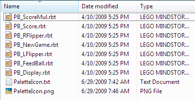

Fun Projects for your LEGO� MINDSTORMS� NXT!
|
|
Fun Projects for your LEGO� MINDSTORMS� NXT! |
|
This tutorial explains how to use the "My Block" feature of the NXT-G programming system by working through several examples. What is a My Block? Making your First My Block Creating My Blocks with Input Parameters Variables, Wiring, and Editing within a My Block Making a Modified Copy of a My Block Creating More Advanced My Blocks Organizing and Sharing My Blocks What is a My Block?The Common and Complete palettes in the NXT-G programming system contain all of the built-in blocks that you can use to create an NXT program. The NXT-G software also allows you to create your own blocks called "My Blocks". These blocks are blue in color and appear on the Custom palette in NXT-G. A My Block is a sequence of other blocks that is packaged up into a single block to make it easier to use in a program. Users of other programming languages might know this as a "subroutine", "subprogram", or "function". Figure 1: My Blocks are blue in color, and
they appear in the Custom palette in NXT-G. Why Use My Blocks?The most common reason to use a My Block is that it allows you to easily re-use a sequence of blocks over and over again, without needing to re-create the sequence each time. Using a My Block, you only need to create the sequence once, and then you can use it as many times as you want in any of your programs by just inserting a single My Block for each use. Another advantage of using My Blocks is that the program sequence that makes up the My Block is only stored in the NXT�s memory once for each program that uses it, even if the program uses the My Block several times, so My Blocks can be a good way to fit more programming into the NXT�s limited memory. Finally, you might also use My Blocks simply to break up a long program into chunks to make it easier to work with, even if you don�t plan to use a chunk more than once, because working with smaller programs is much easier in NXT-G. In this tutorial, we will walk though several examples of creating and using My Blocks, starting with a very simple example, then increasingly more complex examples that use features such as input parameters, output ports, and variables to make them more powerful and more flexible. A step-by-step process for creating and testing a complex My Block will be developed and presented as guide to creating your own blocks. Finally, we will learn how you can organize and customize your My Blocks and share them with others. Making your First My BlockFor our first example My Block, we will create a block named BeepBeep that will sound two tones from the NXT speaker, and then we will use it in a program along with other blocks that make the robot move. This simple example will show the basic steps needed to create and use any My Block. Creating a My BlockThe first step to creating a My Block is to write a program that uses the desired sequence of blocks. Figure 2 shows a program made of up of five blocks that makes a robot move forward, sound two tones from the speaker, then move forward again. The three selected blocks in the middle are responsible for the two sound tones (a Wait block is used to separate the tones into two distinct sounds). We will convert this sequence of three blocks into a My Block named BeepBeep, which will allow us to easily re-use this sequence.
Figure 2: A sequence of blocks can be
selected and converted into a My Block for easier re-use. Once you have a working program that includes the behavior for your My Block, select the sequence of blocks that will make up the My Block by dragging a selection rectangle over them as shown in Figure 2. Each selected block should then show a blue selection outline. To make a My Block out of the selected blocks, click the Create My Block button on the toolbar, as shown in Figure 3, which will bring up the My Block Builder window, as shown in Figure 4.
Figure 3: With a sequence of blocks selected, click the
�Create My Block� The My Block Builder consists of two steps. The first step shown in Figure 4 shows a preview of the My Block�s contents in the Selected Blocks section. In this step you must enter a name for the My Block in the Block Name box (here BeepBeep). Choose a name for your block that is descriptive but short. Although longer names are accepted, they will be cut off when displayed on the block and thus harder to read in a program. You can also enter an optional description of the block in the Block Description box. This description will be printed along with the block diagram if you print the contents of your My Block using the Print command from the File menu, but it won�t be displayed anywhere on the screen. You can also leave the description blank. Press the Next button to go on the second step of the My Block Builder, which will allow you to choose an icon to display on the face of your My Block. Pressing Finish after the first step will skip the icon choice and use a generic My Block face.
Figure 4: In the first step of the My Block Builder, enter a
name and description for the My Block. The second step of the My Block Builder shown in Figure 5 allows you to choose an icon that will display on the face of your My Block. You can select an icon from the list shown and drag it to the white square on the top of the dialog. You can then position the icon on the face of the block by dragging it with the mouse or pressing the arrow keys on the keyboard. You can also resize the icon by dragging the black corners of the selection rectangle. If you want, you can select more than one icon from the list and overlay them as desired to create an image that is a combination of icons. In Figure 5, two copies of the musical note icon (the second icon in the list) are used to create an image that is suggestive of this block�s function of sounding two tones. Press Finish to complete the My Block Builder and create your My Block.
Figure 5: The Icon Builder step allows you to customize the
icon for your My Block. After creating our My Block, the
modified program is shown in Figure 6. The three blocks that make up the
BeepBeep block have been replaced by a single blue My Block displaying the
name and image that we chose for the BeepBeep block. The program will
still do the same thing as it did before (go forward, sound two tones, then go
forward again), but now part of the program is contained inside the My Block.
Figure 6: Extra space in the sequence beam left after a My
Block has been created Viewing and Editing the Contents of a My BlockOnce our BeepBeep block has been created, the blocks contained inside it have disappeared from view in the original program, as shown in Figure 7. To view the contents of a My Block or edit the blocks contained inside, you can double-click on the My Block, which will open the contents of the My Block as a new tab in the NXT-G program editor, as shown in Figure 8. This looks similar to having another NXT-G programs open, except that the BeepBeep tab is marked with two blue bars to indicate that the contents is a My Block instead of a normal program.
Figure 7: To view or edit the contents of a My Block in a
program, double-click the My Block.
Figure 8: A My Block opened for viewing or editing will open
as another NXT-G program in a new tab, To change the contents of a My
Block, simply edit the blocks in the contents tab as in a normal program. Any
changes made to the contents will affect all uses of the My Block in all
programs that use it, after those program(s) are re-compiled and re-downloaded
to the NXT.
Inserting a My Block into a ProgramAfter creating a My Block, NXT-G will automatically modify the original program to use the My Block in place of the original block sequence as shown in Figure 7 above. Now you can also re-use the My Block by inserting other uses of it in the same program or in other programs. To insert a new use of a My Block into a program, select the Custom Palette as shown in Figure 9. The top menu of blocks in the Custom Palette contains the My Blocks that you have created. Figure 10 shows the BeepBeep block along with seven other My Blocks that I have created. The blocks are ordered alphabetically by the block name in the menu. If you are using multiple NXT-G user profiles, each user profile will contain its own list of My Blocks that were created by that user profile.
Figure 9: To insert a My Block into a program, select the
Custom Palette.
Figure 10: The top menu in the Custom Palette contains the My
Blocks you have created. My Blocks chosen from the Custom Palette can be inserted into a program just like regular blocks. The modified program in Figure 11 now uses the BeepBeep block twice. Compared to the alternative of inserting the 3-block sequence of the BeepBeep block directly into the main program twice, the program using the BeepBeep block is shorter, easier to read, easier to modify, and takes less memory on the NXT.
Figure 11: My Blocks can be easily re-used, saving both
programming time and memory on the NXT. Creating My Blocks with Input ParametersThe BeepBeep block created in the previous section was very easy to create and easy to use, but it is somewhat limited in what it can do. It will always sound the exact same two tones every time is it used. This is fine for some blocks, but many times you will want to create a My Block that can have its behavior modified each time it is used. For example, each time you use the standard Move block, you can specify a different Duration, a different Power level, etc. These aspects of the block that you can modify are called parameters. (more specifically, input parameters, because they provide input data values to the block). It is possible to create your own My Block that contains one or more input parameters that modify its behavior and make it more flexible, and that is what we will learn in this section. What are Input Parameters?Most of the built-in NXT-G blocks have input
parameters. For example, the Move block shown in Figure 12a has several
parameters that show up in the configuration panel when the block is selected
(Figure 12b). These parameters allow you to change the behavior of each
different use of the block. As an example of creating a My Block with an
input parameter, let�s create a My Block that is a simplified version of the
Move block. If you simply select the Move block and create a My Block
out of it using the steps shown in the BeepBeep example earlier (a My
Block can consist of only one block if you want), then the resulting My Block
will have no input parameters and will instead always use the values of the
parameters that were entered for the contained block when it was created. For
example, the Move block in Figure 12 above was set to have a Duration of
500 degrees, Power level 75, etc. Figure 13a shows the result of creating a My
Block out of this Move block. Because the My Block will always use a Duration of
500 degrees, I named the My Block Forward500. Since there are no
parameters, the configuration panel displayed when the My Block is selected is
empty (Figure 13b). This might be useful if you wanted to move by this amount
over and over in a program, but it would be more useful if the program using the
My Block could specify the duration in a parameter, similar to the original
Move block. Figure 13a/b: A simple My Block created from a single
Move block has no parameters that be changed. Creating a My Block with an Input ParameterIn this section, we will learn how to create a My
Block that includes an input parameter. Doing this is more complex than a simple
My Block such as the BeepBeep example earlier and requires the use of
data hubs, data wires, and Variable and/or Constant blocks. Be sure you are
familiar with these concepts before proceeding here.
As an example of a My Block with an input parameter, we will create a new version of a simplified Move block named ForwardDeg which will include a Degrees (duration) parameter that will allow the program to specify how many degrees to move, instead of always using 500 degrees as in the Forward500 block above. To create a My Block with a parameter, you will need to create a wired data connection to each parameter of the contained blocks that you want access to. We will want to access the Duration parameter of the Move block, so we must start by opening the data hub of the Move block as shown in Figure 14.
Figure 14: To access the data ports for a block, click in the
location shown to drop the block�s data hub. To create a wired data
connection to the Duration parameter of the Move block, we must
create a data source for it. An easy way to do this in the NXT 2.0 software is
by using the Constant block (Figure 15). Place the Constant
block before the Move block, as shown in Figure 16.
Figure 15: The Constant block on the Data menu can be
used to create a connection to a data port.
Figure 16: Position the Constant block at the beginning
of your sequence. Using the configuration panel for the Constant block (Figure 17), configure the constant to have Custom for the Action, then set the Data Type to the correct type for the parameter (Number in this case), and give the constant a name that will help you remember what it does (here I chose "Degrees"). You can also enter a value for the constant in the Value field. This value is useful for testing your block sequence before you create the My Block (but the resulting My Block will have a parameter in place of this value).
Figure 17: In the configuration panel for the Constant
block, enter the data type, Once the constant block has been correctly configured, connect it to the block parameter that you want to control with a data wire (Figure 18).
Figure 18: Wire the output port of the Constant block
to the input port for the input parameter. The two-block program in Figure 18 will now do the same thing as the one-block program in Figure 12: It will use the Move block to go forward by 500 degrees. The difference is that we have now �wired in� the Duration parameter using a Constant block set to the number 500 instead of putting the 500 directly into the Move block. Note that all the other parameters for the Move block such as the power level are being taken directly from the Move block�s configuration panel (including the setting Degrees which tells the Move block to interpret the duration value of 500 as degrees and not seconds). Now is a good time to test the program to make sure that it works as expected before creating the My Block. After testing the program in Figure 18, you can create the My Block. To create the My Block, select the Move block but not the Constant block, and then click the Create My Block button (Figure 19) and proceed with the My Block Builder to create the My Block named ForwardDeg.
Figure 19: When creating the My Block, select the block(s) to be
included but not the Constant block(s). Creating the My Block as shown
in Figure 19 will result in a My Block with an input parameter for the Move
block�s Duration property due to the following rule:
You can think of the My Block as being �cut� from the program when it is created, and any data paths leading outside of the cut blocks result in �open ends� that needs data sources. These open ends result in input parameters, where the data sources will be specified by the program that uses the My Block. If we had also selected the Constant block in Figure 19 when making the My Block, the result would be a My Block that again always moves by 500 degrees, because the number 500 would be specified inside the My Block contents. Using a My Block with an Input ParameterAfter creating a My Block from the selection
shown in Figure 19 and naming it ForwardDeg, the modified program is
shown in Figure 20a. The Move block (the only block included in the My
Block) has been replaced by the ForwardDeg My Block, and the Degrees
Constant block is still there and is now wired into the data hub of the
ForwardDeg My Block. Selecting the ForwardDeg block shows the
configuration panel in Figure 20b, where we can see that we now have access to
the Duration parameter of the Move block inside the My Block. Figure 20a/b: An input parameter for a My
Block is accessible in the block�s As with the built-in NXT-G blocks, if a data source is wired into the data hub of a My Block, that data value will be used, otherwise the value from the block�s configuration panel will be used. Here the value of 500 is wired in by the Degrees Constant block, so that value overrides the 0 value for the Duration in the configuration panel, so the resulting program will still do what it did before (move forward by 500 degrees). If you test the modified program after creating a My Block, it should do the same thing as the program used to create the My Block. Now that the ForwardDeg My Block has been created, you can delete the Degrees Constant block if you want and specify the Duration directly in the configuration panel of the ForwardDeg block. You can also place more ForwardDeg blocks in your program from the Custom palette and specify the Duration either by the data hub or the configuration panel. At this point, you may be wondering why you would want to create a My Block out of a single block and provide access to only one of its parameters. In this sense, the ForwardDeg block seems less useful than the Move block by itself, since the Move block is still only one block and also allows you to change the power level, etc. The ForwardDeg block is mainly shown here as a simple example, but there are some situations where you might find something like this useful. For one thing, using the ForwardDeg block might make the program that uses it easier to read. If your program has a lot of Move blocks in it, you can�t as easily tell which ones are going forward or backward or using degrees vs. seconds without a closer look at the blocks. Using My Blocks for actions lets you see the names you assigned to each block, which is more suggestive of what it does. Also, you can take advantage of the fact that a change to the contents of a My Block will affect all uses of that block. For example, if I use the ForwardDeg block ten times in a program, all ten uses will use the same power level that was set inside the My Block (75 as above). Then if you edit the My Block contents and change the power level of the single Move block inside it, all ten uses of the ForwardDeg block will automatically use the new power level. If you had used ten individual Move blocks, you would need to change all ten power levels individually. Designing Your Own Input ParameterIn the ForwardDeg example above, an input parameter was created that provided direct access to one of the parameters of the blocks contained in the My Block (the Duration parameter of the Move block). You can also design your own input parameters for a My Block that behave the way you want them to and choose your own names for them. As an example, let�s start over again with our example of a My Block that moves forward, and this time we will make a different version named Forward cm, which has the Duration parameter (which was interpreted as degrees) replaced with a parameter named Distance cm, which is the distance in centimeters that we want the robot to travel. Many users of NXT robots wish they could tell the robot how far to travel in inches or centimeters rather than needing to determine the correct degrees value. With a little math, we can create a My Block that will do this for us in NXT-G. By running some experiments with a robot that uses the standard NXT 2.0 tires (43.2 x 22) on its drive wheels, you can determine that the drive motors need to turn 27 degrees to make robot travel 1 cm (this is best determined by observing how many degrees are necessary to travel a longer distance such as 100 cm then dividing to determine the 1 cm figure). Note that this figure will vary depending on whether the robot uses treads vs. tires, the tire diameter, and any gears used, but once you have chosen these in your robot design you can determine the conversion from degrees to cm.
Figure 21a shows a program that converts a distance in
centimeters (coming from a Constant block named cm) to motor
degrees by using a Math block, and then wiring the resulting degrees to
the Duration port on a Move block. The Math block is
configured to multiply by 27 (Figure 21b). Figure 21a/b: The Constant block
value is multiplied by 27 before being used as the Duration degrees. By selecting both the Math block and the Move block (but not the Constant block) and creating a My Block (Figure 22), the resulting My Block will have one input parameter that will allow the program using the My Block to supply the distance in cm. Note that the input parameter results from the data wire that leads to the "A" port of the Math block when the Math block was �cut� from the Constant block during the My Block creation. The wire leading to the Duration port of the Move block does not result in another input parameter, since its data source (the Math Block) is inside the My Block. This is what we want; our input parameter�s value in cm will go into the Math block, get multiplied by 27, and then get sent to the Move block as degrees.
Figure 22: The Math and Move blocks are included in
the My Block, but not the Constant block. Changing the Name of a ParameterThe result of creating a My Block from the program shown in Figure 22, naming the My Block Forward cm, and then opening the contents of the My Block is shown in Figure 23. The Forward cm tab contains the contents of the My Block, which consists of the two blocks that make up the block (a Math block and a Move block), and also a special parameter connection block that represents the source of the input parameter. By default, NXT-G names an input parameter for a My Block by taking the name of the data port that the source wire is wired to, so in this case the parameter is named "A", because it is wired to the "A" port of the Math block. This is also the name that will show up in the My Block�s configuration panel. You can rename a parameter to make it more descriptive, as explained below, and usually you will want to do this.
Figure 23: The default name of the parameter is usually taken
from the first data port it is connected to. To rename a parameter in a My Block, double-click on the name of the parameter, which displays above the parameter connection block in the contents of the My Block, then type a new name. You can also drag the parameter connection block to a different position if desired, as shown in Figure 24.
Figure 24: A parameter connection block can be moved and
renamed. When you rename a parameter, the
new name will also be used in the My Block�s configuration panel. However, to
see the new name, you will need to delete the first copy of the My Block that
was created and insert a new copy of the My Block. Figure 25 shows a new copy of
the Forward cm block and its configuration panel showing the input
parameter, now named Distance cm. Figure 25: Inserting a new copy of the My
Block will show the renamed parameter. Creating a My Block with Multiple Input ParametersThe ForwardDeg and Forward cm blocks that we created earlier each had only one input parameter, but as you have probably guessed, it is possible to create a My Block that has more than one input parameter, and this is often useful. There are a few issues to be aware of, so this section will show another example of an extended variation of the Forward cm My Block that adds an input parameter to control the power level. First, it is important to point out
that you cannot add a parameter to an existing My Block, you must start over and
create it over again. You can recycle some of your previous work by copying and
pasting blocks from the old My Block if necessary, but you must go through the
process of creating the My Block over again.
To create a My Block with multiple parameters, you can start by creating a program that performs the desired action, using a separate Constant block wired to each data port that you wish to make a parameter out of. Figure 26 shows a first attempt at doing this. This program is similar to the program used to create the Forward cm block (Figure 21a), with the addition of another Constant block named Power that is wired to the Power data port of the Move block. However, this program cannot be used to create our desired My Block, because the blocks that need to make up the My Block (just the Math block and the Move block) are not contiguous (all next to each other on the sequence beam). Figure 27 shows a corrected program with the Power Constant block moved to the front of the program, so that the blocks to include in the My Block can be selected contiguously.
Figure 26: In incorrect attempt to prepare a My Block with two
parameters.
Figure 27: Two Constant blocks positioned at the beginning of
the sequence allows After creating a My Block from the program shown in Figure 27, and naming this version of the block Forward, the source program is modified to that shown in Figure 28. You can see that the Forward block has two input parameters, and both are still wired to the Constant blocks that we used to build it.
Figure 28: The two-parameter My Block Forward has a
data hub with two ports. As before, double-clicking the Forward block will open its contents, and here you can rename the parameters. Figure 29 shows the contents of the Forward block with the parameters renamed and the wiring rearranged somewhat.
Figure 29: The contents of the Forward My Block with
parameters renamed As in the previous examples, you
will need to insert a new copy of the Forward My Block to see the renamed
parameters. Figure 30 shows a new copy of the Forward block with its two
input parameters. Figure 30: The Forward My Block with
two input parameters. Making a Block Header CommentAlso shown in Figure 29 above is a suggested format for a block header comment, which is a good way to explain what a My Block does. Especially for a more complex My Block, it is a good idea to include a comment inside the block (using the Comment Tool in the NXT-G editor) that explains what the block does, and also includes a line for each parameter that explains what that parameter is used for. For the built-in NXT-G blocks, if you have a question about what the block or its parameters do, you can consult the help page for that block, but My Blocks that you create will of course not have a help page, and later you may forget exactly how to use a block that you created in the past. If you include a block header comment like this at the top of each My Block, then you can simply double-click on a My Block to open the contents and read the explanation. If you add a block header comment, then you can
also omit the Block Description in the first step of the My Block
Builder (Figure 4), because a block header comment inside the My Block will
appear both on-screen and when printed. Also unlike the Block Description,
the block header comment can be edited later, which is important. Variables, Wiring, and Editing within a My BlockUsing input parameters is one way that an NXT-G program can send data to a My Block. Another way is by using variables. In this section, we will use the Variable block to send an additional piece of data to the Forward move block that we developed in the previous section, in order to make the Forward block even more capable and flexible. Along the way, we will learn a couple of other techniques that come in handy when editing or working with more complex My Blocks. Using Variables to Send Data to a My BlockAs developed in the previous section, the Forward My Block assumes that the robot is using the standard NXT 2.0 tires on its drive wheels, in order to be able to convert centimeters of desired travel distance to degrees of motor rotation. But if a robot used treads instead of tires (or different tires), the conversion would not be correct. Especially for a robot such as Multi-Bot that can either treads or tires, it would nice if we could make a My Block that worked for either treads or tires. We could change the Forward My Block to add a third parameter for this (which would require starting over, since you cannot add a parameter to an existing My Block), but here we will do this with a variable instead. Just as a variable
in NXT-G can be set written at one point in a program and then read in another
point in a program to pass information from one point to the other, a variable
can also be used to pass information between a program and a My Block. To extend
our Forward block to be able to do the correct calculations whether robot
is using treads or the standard NXT 2.0 tires, we will define a variable of type
Logic (value is True or False) named Treads. This variable will
have the value True if the robot is using treads, or False if using tires.
Specifically, the main program will write the value of the variable at the
beginning of the program, and the contents of the Forward My Block will
read the variable to decide what to do. If Treads is False (the robot is
using tires as before), then each centimeter of travel requires 27 degrees of
motor rotation as before. However, if Treads is True, then each
centimeter will require 36 degrees of motor rotation (determined by experiment
with a treaded robot). Defining Variables in a My BlockUnlike adding a parameter to a My Block, adding a variable does not require starting over with the My Block creation, so we can open the contents of the Forward My Block and make our changes there. The first step is to define the variable in the My Block. Figure 31 shows the Treads variable being defined using the Edit - Define Variables menu command in the contents of the Forward My Block.
Figure 31: Variables defined in the contents of a My Block can
be used to send data to the block. Rewriting the Contents of a My BlockAfter defining the Treads variable in the Forward My Block, we are ready to modify the contents of the Forward My Block to use it. Using the variable in the desired way will actually result in a substantial change from the way the Forward block was previously written, so at this point it is helpful to know that once a My Block has been created, you can make major changes to it, to the point of essentially rewriting it if you want. In fact, the only things that you can�t change about a My Block are the number of parameters and the types of the parameters. Everything else can be deleted and re-created if necessary. Figure 32 shows the contents of Forward My Block after deleting the previous cm to degrees calculation and starting the process of using the Treads variable to do this in a different way. The block header comment has also been revised to add a mention of the use of the Treads variable. Note that the two parameter connection blocks cannot be deleted, but you can delete the wires leading from them and then reconnect them to new or rewritten blocks in your revised block contents, which we will do below.
Figure 32: Starting to rewrite the Forward My Block to
use the Treads variable. Sharing Wires in a Tabbed SwitchIn order to get the behavior that we want from the Treads variable in the Forward block, we will use the technique of Wiring into a Switch block. Although not specific to My Blocks, this technique is especially useful when working with My Blocks due to the need to share uses of a parameter, so we will step through an example of using it here. A Logic Switch will be used to test the
Treads variable and decide whether to multiply the Distance cm
parameter by 27 for tires (when Treads is False) or by 36 for treads
(when Treads is True). Figure 33 shows the first part of the Switch
(Treads is True) completed and wired up to a Math block that
multiplies by 36. Note that the Switch must have the Flat view option
unchecked to show the tabbed view, which allows routing data wires into the
switch from outside. Figure 33: The True tab of the Switch uses a
Math block to multiply Distance cm by 36. Figure 34 shows the Switch
block after selecting the False tab and adding another Math block
inside that multiplies by 27 instead of 36. Figure 34: The False tab of the Switch uses
a Math block to multiply Distance cm by 27. We can now wire this second
Math block to the two hidden connection points that were created at the
boundary of the Switch block when the True part was wired. To do
this, draw wires starting from the Math block and ending at the two
connection points on the switch boundary, as shown in Figure 35a/b. Figure 35a/b: The ports on the Math
block in the False tab of the Switch are wired to the points The final result is that the two
Math blocks (one in each tab of the Switch) both use the same
Distance cm input parameter (although only one of them will execute,
depending on the value of the Treads variable), and the result value of
the Math block that was chosen to execute will have its data sent to the
Duration port of the Move block. Using My Block Variables from the Main ProgramOnce we have modified the contents of the Forward My Block to read the Treads variable and modify its calculations accordingly, we can now change the main program to use it. The main program will need to write the value of the Treads variable to the correct value for the robot being used before the Treads variable is read by the Forward block. However, before we can write the Treads variable in the main program we must first define it. Although we already defined the Treads variable in the contents of the Forward block, we need to define it again in the main program, as shown in Figure 36. It is important to spell the variable name exactly the same as the one defined in the My Block, including capitalization.
Figure 36: A variable defined in the main
program with the same name as Figure 37 shows a completed
example test program that uses the Forward My Block with the Treads
variable. At the beginning of the program, the Treads variable is written
with the value True to indicate that the robot being used has treads and
not tires. Then the Forward block is used twice along with the
BeepBeep block that we created earlier. Although the Forward block is
used twice, we only need to write the value of the Treads variable once
at the beginning of the program, and all instances of the Forward block
will use this value.
Figure 37: A variable written in the main program can be read
by the My Blocks. Now if we later decided to
modify our robot to use tires instead of treads, we could simply change the
Treads Variable block at the beginning of the program to set
Treads to False instead of True, and all of the uses of the
Forward block will automatically adapt correctly. Note that if we had
decided to use a third input parameter for the Forward block to send the
Treads data instead of using a variable, each use of the Forward
block in the program would need to be changed to specify the new Treads
parameter value, so in this case using a variable instead of parameter seems
better. In general, if the value of a data item needed by a My Block will not
change while a program is running, you could consider using a variable instead
of an input parameter.
Making a Modified Copy of a My BlockThe Forward block developed in the previous sections provides a reasonably flexible way to make a robot go forward, but what about going backward? The standard Move block has a Direction parameter that can be used to specify whether to go forward to backward, but our Forward block does not. We could make another version of a movement My Block block that included another input parameter to specify the direction, but another option is to create a different My Block named Backward that goes backward instead of forward. This option will tend to make the program using it easier to read, since you will see the block names clearly indicating �Forward� and �Backward� in the program. This section will show how to make a modified copy of an existing My Block with a different name, which is useful in situations like this as well as many other situations (you might want to try out a few different variations on a block, for example). Copying a My BlockTo create a Backward My Block, you can notice that it will be exactly like the Forward My Block except for the direction of movement, so we can make a copy of the Forward My Block, make the direction change, and then name it Backward. To make a new copy of a My Block, start by using the Edit - Manage Custom Palette command (Figure 38).
The Edit - Manage Custom Palette command will open the folder on your computer where the blocks on the custom palette are stored, which is a folder named Blocks in the location where the NXT-G programs for your user profile are stored.
Figure 38: The Manage Custom Palette menu command In the Blocks folder, open the subfolder named My Blocks, which is the folder where My Blocks that you have created are stored. In the My Blocks folder, you can select the My Block you want to copy, use Edit - Copy and then Edit - Paste to create a copy (Figure 39), then select and rename the file (Figure 40).
Figure 39: Making a copy of a My Block (.rbt) file will create
another copy of the My Block.
Figure 40: Renaming a My Block file will change the name of
the My Block. Once you have created and renamed the copy, you can double-click it to open it, and then make the necessary changes to the contents. Figure 41 shows the contents of the completed Backward My Block.
Figure 41: The Backward My Block is just like the
Forward My Block with the Changing the Icon for a My BlockIn the case of the Forward and Backward My Blocks, it is OK for the two blocks to show the same icon on the face of the block, but in some cases when you create a modified copy of a My Block, you will want to the change the icon of the new block. Figure 42a shows a situation where a My Block named LeftPivotAngle was copied and modified to create a similar block named RightPivotAngle. In this case we will want to change the icon for the new RightPivotAngle block. To change the icon for a My Block, you need to select a use of the block (you cannot change the icon inside the contents of the My Block), then use the Edit - Edit My Block Icon command. This command will bring up the second step of the My Block Builder (Figure 5) which will allow you to modify or replace the icon to something else (Figure 42b). Once you have changed the icon, it will be changed for all new uses of the My Block. Figure 42a/b: Changing the Icon of a My
Block (before and after).
Creating More Advanced My BlocksIn the following sections, we will show two more My Block examples that demonstrate some techniques that can be used to make more complex My Blocks. First we will create a My Block named OutAndBack that builds on the blocks we have created so far to make a robot go forward a specified distance, then back up by the same distance to return to the starting point, sounding tones before each movement. Next, we will step through the creation of a more complex My Block named LimitNumber that can be used to test and modify a Number value to make sure it is a specified range. The LimitNumber block is complex enough that it will require some careful planning and testing, so we will conclude by showing a step-by-step process that can be used to guide you through the process of creating a more complex My Block. Using My Blocks Inside Other My BlocksTo build an OutAndBack My Block, we can notice that the three things we want the block to do have already been developed in the My Blocks Forward, Backward, and BeepBeep. Fortunately, a My Block can contain uses of other My Blocks, so the OutAndBack block will be easy to create using these other three blocks. Figure 43 shows the program used to create the OutAndBack block. The main functionality is achieved by simply inserting the My Blocks that we previously created from the Custom Palette. Since the OutAndBack block will have two input parameters (Distance cm and Power), two Constant blocks are used as the data sources for these values before creating the My Block.
Figure
43: A My Block can be created containing other My Blocks. Using Input Parameters More than Once Inside a My BlockAs shown in Figure 43 above, the input parameters Power and Distance cm are used inside the My Block by both the Forward and Backward blocks. When an input parameter is used more than once in the contents of a My Block, it is important that all uses of the parameter are wired back to the same Constant block (or other data source) in the program that is used to create the My Block. This ensures that the different uses all receive the same value and that a single parameter will become the source of all of the uses. Remember that when selecting the blocks to make up the My Block, the selected blocks must all be contiguous, so the Constant blocks in Figure 43 must be placed at the beginning of the sequence. Looking at the selection of blocks in Figure 43 that will be cut out to form the My Block, you will notice that four wires cross the boundary of the selection. However, these four wires only represent two different data paths, because some of the wires join up to the same data source outside the selection. A separate parameter is only created for each different data source that is outside the selection, so two input parameters are created in this case as desired. Figure 44 shows the contents of the resulting OutAndBack My Block. There are two parameter connection blocks, each of which is used twice inside the My Block. Figure 44: The OutAndBack My Block
uses other My Blocks inside it Creating a My Block with an Output Data PortIn the following sections, we will now build a more complex My Block named LimitNumber, which will include an output data port on its data hub. This will allow the My Block to pass a result value back to the program that uses the block. This My Block will be harder to test than the other My Blocks we have created so far, so a method of testing it before and after creating the My Block will be shown. The LimitNumber My Block will accept a Number input parameter along with two other input parameters named Min and Max. It will test to see if Number is in the numeric range of Min to Max and produce an output value that is within that range. Specifically, the result of LimitNumber can be specified as follows:
Since LimitNumber will have three input parameters, we will start with three Constant blocks that can hold the data sources for these parameters. These constants are named Min, Max, and Number in Figure 45. For the output result, we also need a place to connect a data wire that contains the result data to a location outside of the block that will make up the My Block. Similar but reverse to the way input parameters are created when a selection of blocks is turned into a My Block, an output data port will be created for each data path that originates inside the selected blocks and is wired to a location outside of the selected blocks.
An easy way to create this connection is to use a Variable Write block to receive the output result. For clarity, you can use Edit - Define Variables to define a variable of the appropriate type with a descriptive name. For an output port, the variable write block must be placed at the end of the sequence used to create the My Block as shown in Figure 45 below. Figure 45: Preparing to make a My Block with
three input parameters and one output data port. Using a Local Variable in a My BlockFor a complex formula such as the specification of the LimitNumber result based on Number, Min, and Max shown above, it is often helpful to use one or more temporary variables to store and modify intermediate results before producing the final result. If we had a temporary variable named TempResult defined, then we could implement the formula for LimitNumber using the following ordered sequence of actions:
The temporary variable TempResult in this sequence is used only inside the contents of the My Block and is not needed before or after the My Block does its work. However, a possible problem with using a temporary variable inside a My Block is that if the variable has a name that matches another variable used by a program using the block, them the temporary variable will overwrite this variable in the program and likely create a bug. Some programming languages provide a way to create something called a local variable , which will not affect the outside program, but NXT-G does not, so instead we will use a variable naming convention to prevent this problem.
Using a naming convention for variables means coming up with conventions about how you spell variables that are used in different places, in order to prevent name conflicts. A temporary variable with a name like TempResult is unfortunately quite likely to conflict with another variable used in the program (even if you know you don�t have a variable named that now, you may add one later). The naming convention for variables that I suggest is:
This convention will ensure that your temporary variables don�t interfere with normal variables in a program or any temporary variables in other My Blocks. It also makes it easy to identify your temporary variables at a glance because they start with a lower-case letter. Figure 46 shows a temporary variable named number_LimitNumber for use in the LimitNumber My Block.
Figure 46: A naming convention for �local� variables used only
inside of a My Block. Figure 47 shows a program that can be used to create the LimitNumber My Block using the temporary variable number_LimitNumber and the sequence of actions planned above. Note that the only part of the name of the temporary variable displays on the face of the variable blocks, but you can still see the important part of the name at the beginning.
Figure 47: A program to create the LimitNumber My Block
(click to enlarge). As mentioned in the OutAndBack example
earlier, note that all uses of an input parameter need to be wired to the same
data path leading back to the Constant block for that parameter. For
longer My Blocks, it can get difficult to do this. For example, note that the
data path for the Min parameter in Figure 47 is quite long. If it gets
too difficult to wire access to an input parameter in all the locations needed,
you can introduce another temporary variable to hold a copy of the input
parameter. In this case you would use a Variable Write block to copy the
value from the input parameter to the temporary variable at the beginning of the
block contents, then you can use multiple Variable Read blocks to access
the temporary variable throughout the program.
|
|
Note: Just before creating a My Block, it is important to save a copy of the program (separate from the one you are working on, which you should also save) in case the My Block does turn out the way you expect and you need to go back to the source program to make changes. You can save a copy using the File - Save As command. For example, you might use Save As to save a copy of the program shown in Figure 49 named LimitNumberProg1 and then Save As again to save another copy named LimitNumberProg2, then go on to create the My Block in LimitNumberProg2. |
To create the LimitNumber My Block from the completed program, select the
blocks after the parameter Constant blocks at the beginning and before
the block that writes the output result into the Result variable (Figure
49). This selection will result in three input data sources outside the
selection at the beginning, which will become the three input parameters, and
one data path crossing outside of the selection at the end, which will result in
the output data port. The resulting program with the selection replaced by
the My Block is shown in Figure 50. Note that the testing blocks are still there
after the LimitNumber block. You can test the program again at this point
if you want, but it should behave the same as the program before the My Block
was created.
Figure 50: The test program after creating the LimitNumber
My Block.
The contents of the LimitNumber My Block are shown in Figure 51. Here the parameters have been renamed, a block header comment was added, and the wires and comments were rearranged and cleaned up a bit. Note that the output data port results in a connection block similar to the input parameters and can also be renamed.
Figure 51: The finished contents of the
LimitNumber My Block (click to enlarge).
As a final test of the LimitNumber block, you can create a new program that has a new copy of the LimitNumber block wired directly to the testing blocks (Figure 52), and test the different combinations of input parameters by entering them directly in the configuration panel of the LimitNumber block.
Figure 52: Final Testing using a new copy of the
LimitNumber My Block.
As we saw with the LimitNumber My Block in the previous section, there are several steps involved in creating a more complex My Block, and strategic times during the process where you should save and test your work. This section summarizes a step-by-step process that you can use to guide you in the process of creating and testing a complex My Block.
A Step-by-Step Process for Creating and
Testing a Complex My Block:
|
In this final section, we will look at some ways to manage and share your collection of My Blocks.
As shown in the Copying a My Block section earlier, the Edit - Manage Custom Palette command can be used to open the folder on your computer where your My Blocks are stored (Figures 38 to 40). With this folder open, you can copy, rename, or delete My Blocks that you have created by copying, renaming, or deleting the corresponding program (.rbt) files for the My Blocks. In this way, you can manage your set of My Blocks to make alternate versions, get rid ones you don�t need any more, etc.
An NXT-G program that contains a use of a My Block (an instance of a My Block inserted from the Custom Palette) does not actually store the contents My Block inside the main program file. Instead, the program contains only a reference to the My Block, which is essentially the name of the My Block along with some information about where the block came from. When you open the program, the software attempts to locate the My Block file (the My Block�s .rbt file) using this information. If the software fails to find the My Block (because its .rbt file was deleted or renamed, for example), then NXT-G will display a broken block instead of the correct My Block, and you will not be able to download the program to the NXT.
Figure 53 shows an example of a broken block. This example was created by creating a program that used the My Block named Forward500, closing the program, deleting the Forward500 block (from Edit - Manage Custom Palette), and then opening the program again. The NXT-G software knows that the block was named Forward500, but it was unable to find it, so a broken block with the name Forward500 is displayed. Any broken blocks in a program will need to be deleted and the proper blocks inserted, or the missing My Block files need to be located and installed before the program can be used.
Figure 53: A Broken My Block
A common cause of broken blocks is when one user attempts to share an NXT-G program written on one computer with a user on a different computer (by transferring or emailing the program file or posting the program file on the web, for example). If that program contains a reference to a My Block and the My Block is not also transferred, the program will show a broken My Block. It is possible to transfer My Blocks and install them on the destination computer as well, but an easier and better way to share programs is using the Pack and Go feature, as described in the next section.
In the Tools menu of the NXT 2.0 software is a command called Create Pack and Go. This command is another way to save an NXT-G program that will save it along with a copy of all the My Blocks, sounds, and graphics files that are used by the program. Normally, saving an NXT-G program with File - Save or File - Save As will save only the main program file along with references to any My Blocks, sound files, and image files used by the program, and the program will only work on the destination computer if the additional files are already on that computer or are also transferred and properly installed. Saving a program with Tools - Create Pack and Go is a much easier and more reliable way to share programs with other users on other computers.
|
Note: The Create Pack and Go feature is not available on versions of the NXT software prior to NXT 2.0, and the Pack and Go file storage format (.rbtx) is not readable by earlier versions either. If you save a program in this format, it will not be directly readable by users with the NXT 1.X software or the �NXT-G 2.0� software from LEGO Education. |
Figure 54 shows a program that uses two My Blocks, one graphic file, and one sound file, and the Create Pack and Go command is being used to save the program. The Create Pack and Go dialog allows you to enter a name for the saved program and browse for a folder location to specify where the file should be saved. When you use Create Pack and Go to save a program, the program is saved in a different format than a normal (.rbt) NXT-G program file, as indicated by the file extension .rbtx. The NXT-G software calls this format a Distribution, because it is designed to distribute a program to other computers.
Figure 54: The Pack and Go feature saves a
program along with its required
My Blocks, sounds, and graphics into a single file.
The lower portion of the
Create Pack and Go dialog shows which files will be included in the saved
Distribution (.rbtx) file. In this example, the main program PackTest is
being saved, along with the Smile 01 graphic used by the Display
block, the Good Job sound used by the Sound block, and a copy of
the LeftPivotAngle and OutAndBack My Blocks. In addition, the
Backward, BeepBeep, and Forward My Blocks are also included
because they are used by the OutAndBack block. This allows the resulting
distribution file to work on any computer with the NXT 2.0 software regardless
of which supporting files already exist on that computer.
|
Note: The Pack and Go (.rbtx) format is also compressed, which results in significantly smaller files, even for a single program file with no other supporting files. Furthermore, the compression used is the standard "zip" format, so if you rename a Pack and Go (.rbtx) file to have the ".zip" extension, then you can open it with any zip extractor (built in to many computer operating systems) and access the individual files inside (even if you don't have the NXT 2.0 software). |
If you get to the point of creating a lot of My Blocks, it can be helpful to organize them into groups, so that they don�t all appear in one long list on the Custom Palette (Figure 10). It can also be useful to group all of the My Blocks that are designed for a particular project together. Fortunately, NXT-G makes it possible to create additional menus on the Custom Palette where you can organize your my Blocks into groups.
To create an additional menu on the Custom Palette, use the Edit - Manage Custom Palette command to open the storage folder for the custom palette (Figure 55). In this folder, the two subfolders My Blocks and Web Blocks correspond to the two standard menus on the custom palette. To create your own menu, simply create another subfolder at the same level as the My Blocks subfolder. You can then move any My Block (.rbt) files from the My Blocks folder into your new folder.
Figure 55: Creating a new folder next to the My Blocks folder
will create a new menu in the Custom Palette.
In Figure 55, I have created a subfolder named Pinball to hold seven My Blocks that were designed specifically for a pinball machine project that I designed. Figure 56 shows the seven My Block (.rbt) files that I moved to the Pinball folder, and Figure 57 shows the resulting menu on the Custom Palette with the seven My Blocks for the pinball machine project on it.

Figure 56: The Pinball folder contains all the My Blocks specific to the Pinball project.
Figure 57: The Pinball My Block menu containing seven My Blocks and showing its custom menu icon.
The Pinball menu in Figure 57 displays as a black circle because I
have customized the icon for it. NXT-G makes it easy to customize your own menu
icons if you want. Figure 56 shows two additional files named PaletteIcon.txt
and PaletteIcon.png that have been placed in the Pinball folder.
The PaletteIcon.png file is a graphic file that specifies the icon to use
on the menu, and the PaletteIcon.txt file is a text file that specifies
the tooltip text that is displayed when you position your cursor over the menu
icon. If these files (named exactly this) are present in a My Blocks folder, the
menu icon will be customized, otherwise it will display the standard icon and
tooltip.
The PaletteIcon.png file must be a graphic
file in the PNG format that is 45 x 45 pixels in size. On a computer running
Windows, you can create this file using the Paint accessory program. In
the Paint program, use Image - Attributes to set the image size to
45 by 45, draw and/or paste whatever image you want, and then save the file in
PNG format (.png). The PaletteIcon.txt file can be created on a Windows
computer using the Notepad accessory program to create a simple text
file.
|
Note: The PaletteIcon.txt file in a My Block folder is ignored unless the PaletteIcon.png file is also present, so if you want a custom tooltip for a My Block menu, you must also make a custom icon for it. |
|
|


{kind=link}
{kind=link}
{kind=link}